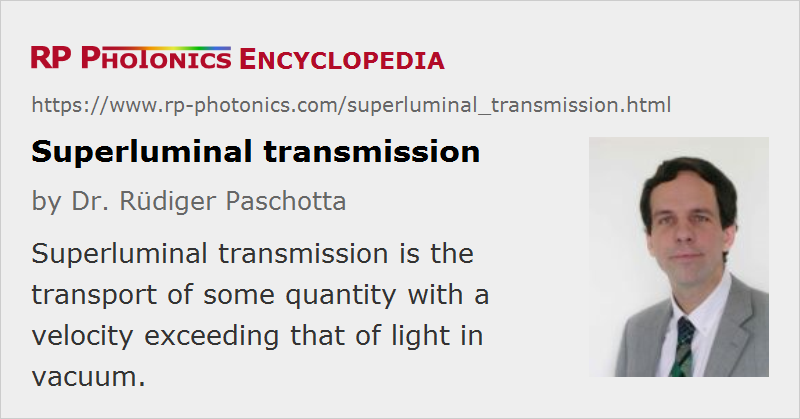

Superluminal Transmission
Definition: transport of some quantity with a velocity exceeding that of light in vacuum
German: Übertragung mit Überlichtgeschwindigkeit
Categories: general optics, physical foundations
How to cite the article; suggest additional literature
Author: Dr. Rüdiger Paschotta
Under certain circumstances, light can propagate with a phase velocity or group velocity greater than c, the vacuum velocity of light. At a first glance, this may suggest the possibility of superluminal transmission of information – in striking contradiction with Einstein's theory of relativity, which shows that superluminal transmission would be associated with a violation of causality. However, careful inspection of the accepted physical theories (in particular, of Maxwell's theory of electromagnetism, Einstein's theory of relativity, and quantum electrodynamics) shows that these definitely do not allow any non-causal effects. Any attempt to demonstrate such effects on the basis of these theories must fail for logical reasons and is thus based on fundamental misconceptions, although the flaw may not always be easy to identify.
Two relatively simple examples of apparently (but not really) non-causal transmission are given here:
- The phase velocity of light can be higher than c, e.g. for X-rays or near optical resonances of atoms. Even a simple mechanical model (e.g. a sequence of coupled pendulums) can exhibit a phase velocity above c. However, it is not possible to attach a real signal to such a phase front; signal transmission requires some kind of modulation.
- Information can be transmitted by sending (or not sending) pulses. The information then appears to propagate with the group velocity, i.e. the velocity of the peaks. Group velocities larger than c then appear to lead to superluminal transmission and can occur e.g. in tunneling experiments. However, the error lies in identifying the peak of the pulse with the temporal position of the carried information [1]. For example, a Gaussian-shaped pulse can be detected long before its peak due to the rise of intensity at earlier times. Therefore, a different kind of signal must be considered, where no information at all is sent out before a certain moment of time. For such signals, it can be proven that the earliest time at which that switching event can be observed is limited exactly by propagation with the vacuum velocity c [1]. A so-called precursor is traveling with that speed, but is normally too weak to be detected, except in certain circumstances [10].
Of course, it is conceivable that the currently accepted physical theories, e.g. Einstein's theory of relativity, will have to be revised or replaced with newer theories, possibly even allowing for superluminal propagation. Such theories exist already, but so far there is no convincing evidence that could support the withdrawal of relativity in the favor of an alternative theory.
Questions and Comments from Users
Here you can submit questions and comments. As far as they get accepted by the author, they will appear above this paragraph together with the author’s answer. The author will decide on acceptance based on certain criteria. Essentially, the issue must be of sufficiently broad interest.
Please do not enter personal data here; we would otherwise delete it soon. (See also our privacy declaration.) If you wish to receive personal feedback or consultancy from the author, please contact him e.g. via e-mail.
By submitting the information, you give your consent to the potential publication of your inputs on our website according to our rules. (If you later retract your consent, we will delete those inputs.) As your inputs are first reviewed by the author, they may be published with some delay.
Bibliography
| [1] | A. Sommerfeld, “Ein Einwand gegen die Relativtheorie der Elektrodynamik und seine Beseitigung”, Phys. Zeitschr. 8, 841 (1907) |
| [2] | C. G. B. Garrett and D. E. McCumber, “Propagation of a gaussian light pulse through an anomalous dispersion medium”, Phys. Rev. A 1 (2), 305 (1970), doi:10.1103/PhysRevA.1.305 |
| [3] | S. Chu and S. Wong, “Linear pulse propagation in an absorbing medium”, Phys. Rev. Lett. 48 (11), 738 (1982), doi:10.1103/PhysRevLett.48.738 |
| [4] | A. M. Steinberg and R. Y. Chiao, “Dispersionless, highly superluminal propagation in a medium with a gain doublet”, Phys. Rev. A 49 (3), 2071 (1994), doi:10.1103/PhysRevA.49.2071 |
| [5] | D. Mugnai et al., “Observation of superluminal behaviors in wave propagation”, Phys. Rev. Lett. 84 (21), 4830 (2000), doi:10.1103/PhysRevLett.84.4830 |
| [6] | L. J. Wang et al., “Gain-assisted superluminal light propagation”, Nature 406, 277 (2000), doi:10.1038/35018520 |
| [7] | M. D. Stenner et al., “The speed of information in a ‘fast-light’ optical medium”, Nature 425, 695 (2003), doi:10.1038/nature02016 |
| [8] | M. S. Bigelow et al., “Superluminal and slow-light propagation in a room temperature solid”, Science 301, 200-202 (2003), doi:10.1126/science.1084429 |
| [9] | M. D. Stenner et al., “Fast causal information transmission in a medium with a slow group velocity”, Phys. Rev. Lett. 94 (5), 053902 (2005), doi:10.1103/PhysRevLett.94.053902 |
| [10] | H. Jeong et al., “Direct observation of optical precursors in a region of anomalous dispersion”, Phys. Rev. Lett. 96 (14), 143901 (2006), doi:10.1103/PhysRevLett.96.143901 |
| [11] | J. D. Jackson, Classical Electrodynamics, Wiley, (1998) |
See also: velocity of light, phase velocity, group velocity, causality
and other articles in the categories general optics, physical foundations
|  |
If you like this page, please share the link with your friends and colleagues, e.g. via social media:
These sharing buttons are implemented in a privacy-friendly way!